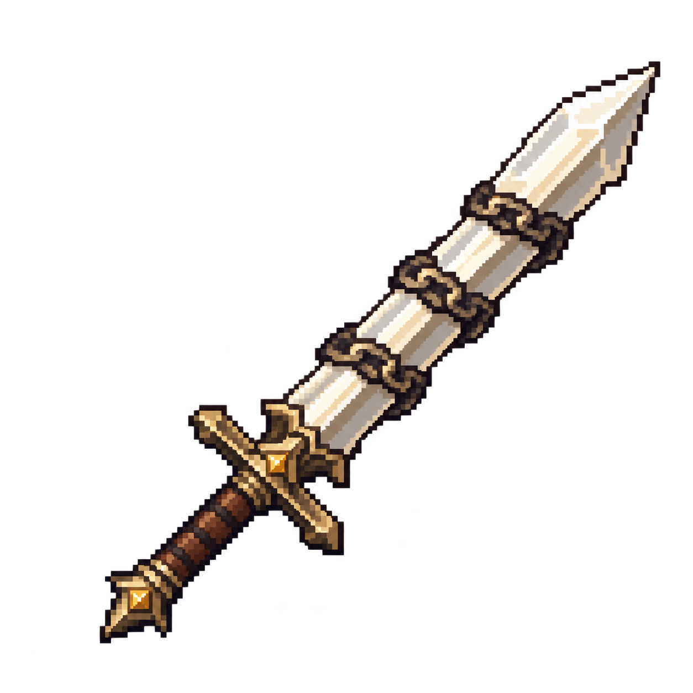
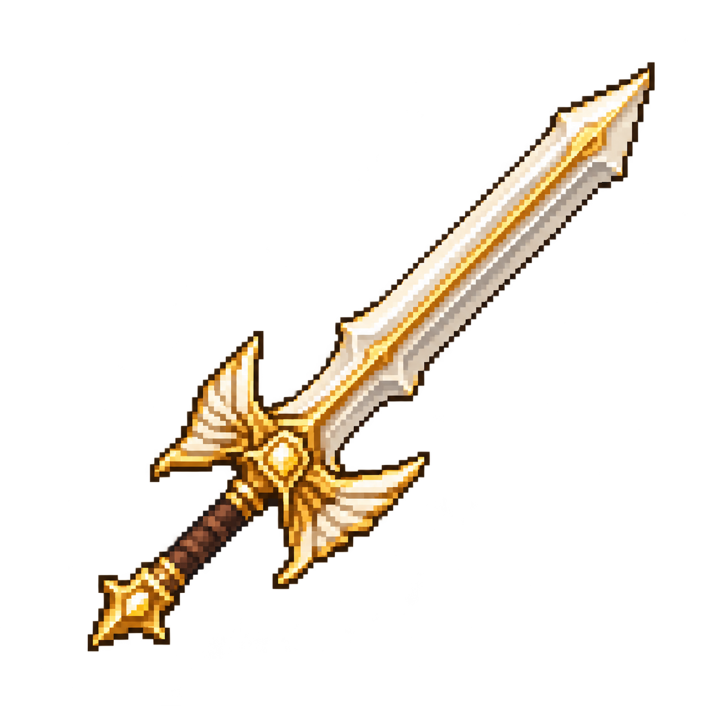
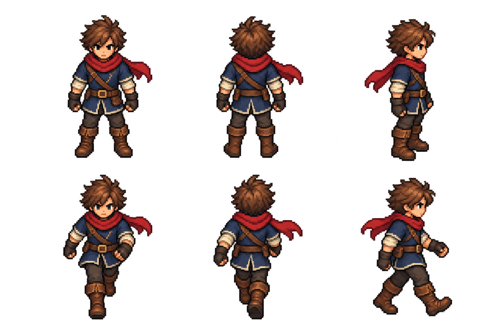
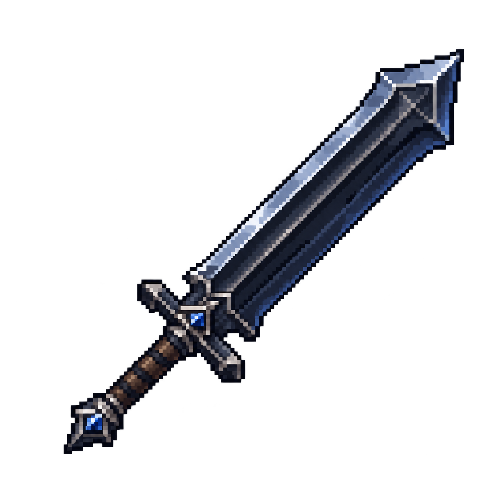
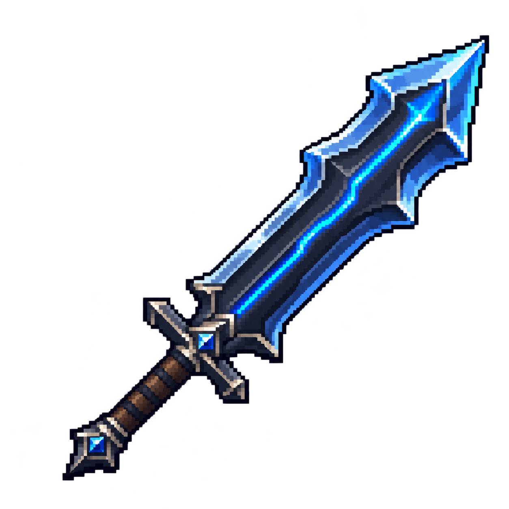
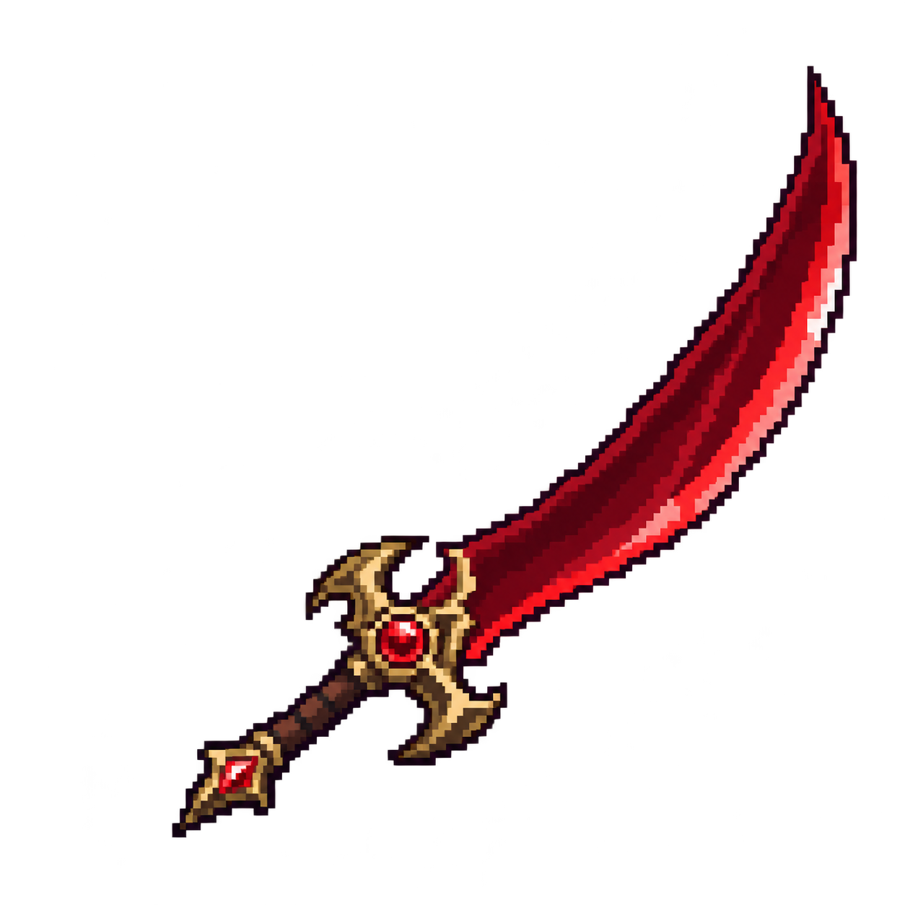
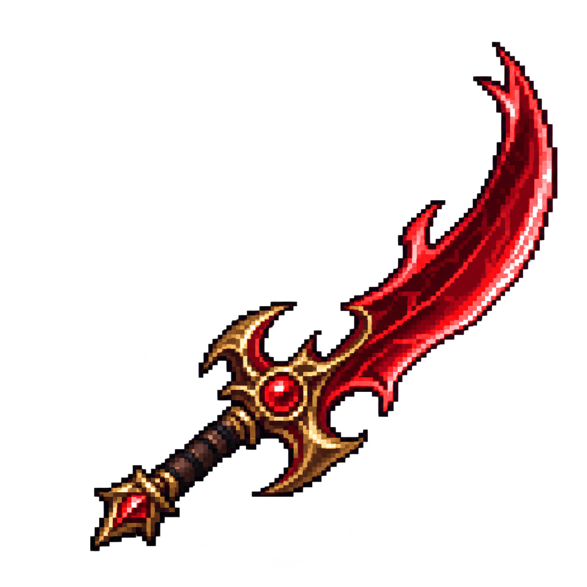
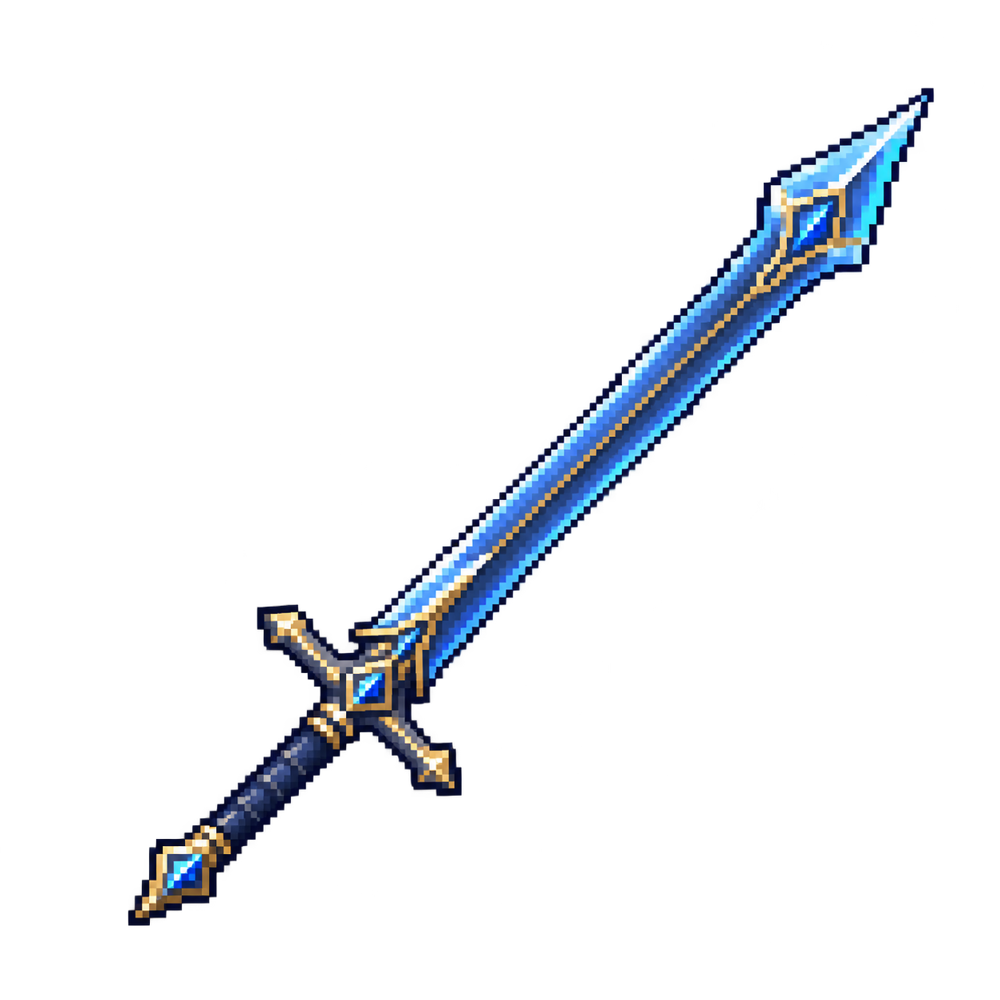
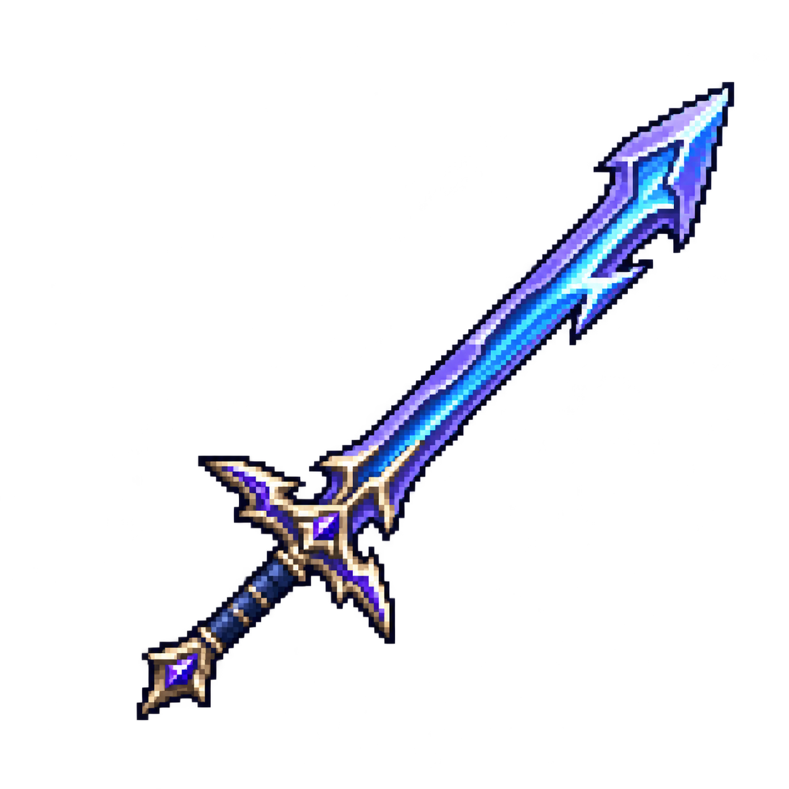

성검 / 봉인과 해방


용사가 다한다 / ART STUDY 03
현재 캐릭터와 무기의 정체성을 살리고, 작은 화면에서도 읽히는 도트 디자인으로 정리했습니다.
디자인 시안투명 PNG게임 적용 전
실제 게임 카메라를 바꾼 캡처는 아닙니다. 우선 월드만 15~20% 확대하고 HUD는 유지하는 비교를 권장합니다. 카메라·캐릭터 크기 조정안








사용자 의견: 타이틀 화면처럼 자연스러운 중앙방. 현재 사각형 방에 고정된 느낌을 완화합니다.
모닥불을 중심으로 무너진 벽과 암벽이 불규칙한 외곽을 만들고, 대장간·침대·던전 입구가 작은 구역으로 이어지는 구성을 검토합니다. 이번에는 캐릭터와 검을 먼저 제작했습니다.